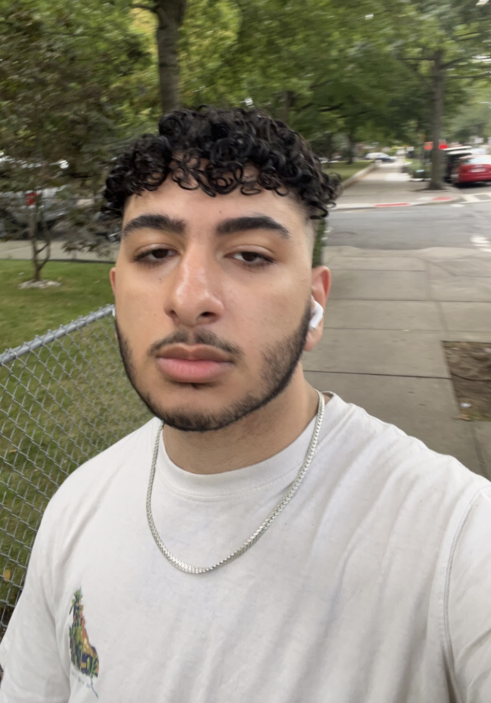

Hi! My name is Tamer and I'm currently a senior at Brooklyn Technical High School. I was introduced to coding at a young age by my older brother, but I never pursued it until taking a Harvard CS50 course in the summer as a 15 year old. Over the past year, the different environments I've had the pleasure of being in have allowed me to grow as both a programmer and a person, and I hope to bring those experiences into any future community I join.
My skills:
